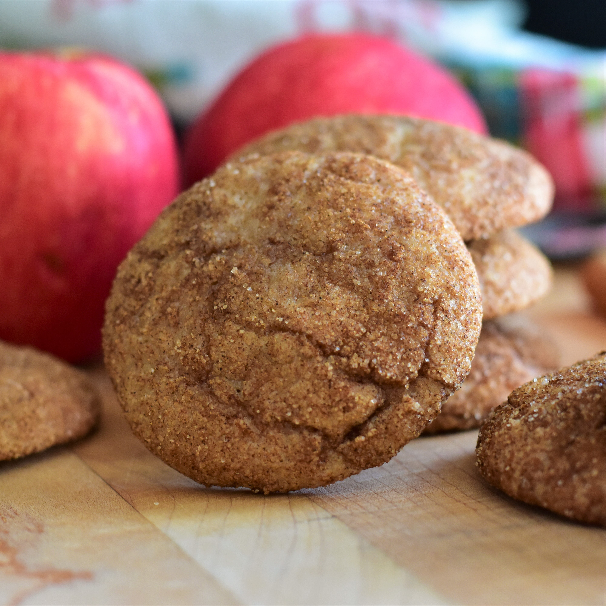

Apple Butter Snickerdoodles

Description
A classic cookie with a fall time twist. These snickerdoodle cookies have a hint of apple butter
for a different take on a classic favorite. Sure to please any self proclaimed cookie critic.
Get the sensation of a crisp fall morning walking through the apple orchard combined with
the taste and warmth of fresh baked cookies all wrapped together with spices that feel like
fall dancing on your tongue. The perfect way to start getting those fall feelings.
Ingredients
- 2 3/4 cup all-purpose flour
- 1/2 tsp cream of tartar
- 1/2 tsp baking soda
- 1/2 tsp salt
- 1/4 tsp ground cinnamon
- 1/4 tsp ground nutmeg
- 1 3/4 cups white sugar, divided
- 1/2 cup unsalted butter, softened
- 1 large egg, at room temperature
- 1/2 tsp vanilla extract
- 3/4 cup apple butter
- 2 tbs ground cinnamon
Instruction
- Whisk together flour, cream of tartar, baking soda, salt, 1/4 teaspoon cinnamon, and nutmeg in a medium bowl until combined.
- Mix together butter and 1 1/2 cups sugar in a large bowl until thoroughly combined. Stir in egg and vanilla until incorporated. Add apple butter and mix until combined. Pour in 1/2 of the dry ingredients and mix until just combined. Add remaining dry ingredients and mix just until no dry clumps of flour remain. Cover bowl and refrigerate for at least 2 hours, or up to 24 hours.
- Preheat the oven to 375 degrees F (190 degrees C). Line 2 baking sheets with parchment paper.
- Mix together remaining 1/4 cup sugar and 2 tablespoons cinnamon in a shallow bowl or pie pan. Drop tablespoon-sized pieces of dough into the cinnamon-sugar mixture and roll into balls, coating well. Place 1 inch apart on the prepared baking sheets.
- Bake in the preheated oven until edges are just set, about 10 minutes. Allow cookies to cool on baking sheets for 5 minutes before removing to a wire rack to cool completely.